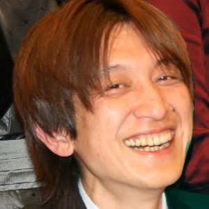

プログラム委員長

運営委員長
副運営委員長
プログラム委員

岩本 拓也
所属：株式会社サイバーエージェント
専門：Dating Science，アドテク，環境拡張
梅村 恭司
所属：豊橋技科大
専門：
沖 真帆
所属：はこだて未来大
専門：
小倉 加奈代
所属：岩手県立大学
専門：コミュニケーション分析/支援，技能習得分析/支援，セキュリティ心理学
梶本 裕之
所属：電通大
専門：
川口 一画
所属：筑波大
専門：
櫻井 翔
所属：電通大
専門：
辻田 眸
所属：シンクフェーズ
専門：
中村 裕美
所属：産総研
専門：
原 貴洋
所属：ヤマハ株式会社
専門：TCP/IPネットワーク，遠隔地間音楽セッション
真鍋 宏幸
所属：NTTドコモ
専門：ウェアラブル/ユビキタス，センサ，入出力デバイス
𥱋瀨 洋平
所属：ユニティ・テクノロジーズ・ジャパン合同会社／東京大学先端科学技術研究センター
専門：ゲームデザイン，レベルデザイン，体験デザイン，消極性デザイン，超人スポーツ
運営委員
| 会場 | 西田 健志（神戸大） |
| 会計 | [正] 細部 博史（法政大）、[副] 伊藤 正彦（東大, NICT） |
| 出版・デザインコンペ | 中村 裕美（産総研）、大槻 麻衣（筑波大）、益子 宗（楽天技術研究所） |
| 広報・学会リエゾン | 佃 洸摂（産総研） |
| WISS Challenge | 入江 英嗣（東大） |
| チャット | 小倉 加奈代（岩手県立大）、福地 健太郎（明治大） |
| 動画生中継 | 杉浦 裕太（慶応大）、阪口 紗季（東大） |
| デモ・ポスター | 真鍋 宏幸（NTTドコモ）、村尾 和哉（立命館大） |
| ネットワーク | 丸山 一貴（明星大）、原 貴洋（YAMAHA） |
| Web・投票・サーバ | 加藤 淳（産総研）、小山 裕己（産総研） |
| 懇親会 | 辻田 眸（シンクフェーズ）、簗瀬 洋平（Unity） |
| 表彰 | 五十嵐 悠紀（明治大）、沖 真帆（はこだて未来大） |
| 企業スポンサー | 大坪 五郎（LIFULL）、川本 菜摘（無所属）、岩本 拓也（サイバーエージェント） |
| 学生ボランティア | 櫻井 翔（電通大） |
| 参加者管理 | 樋口 啓太（東大） |